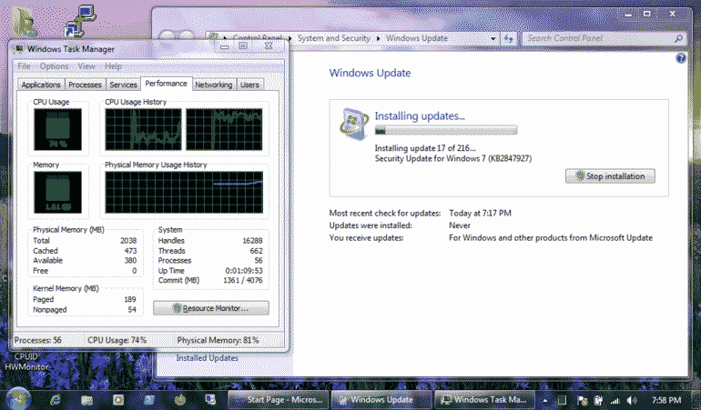
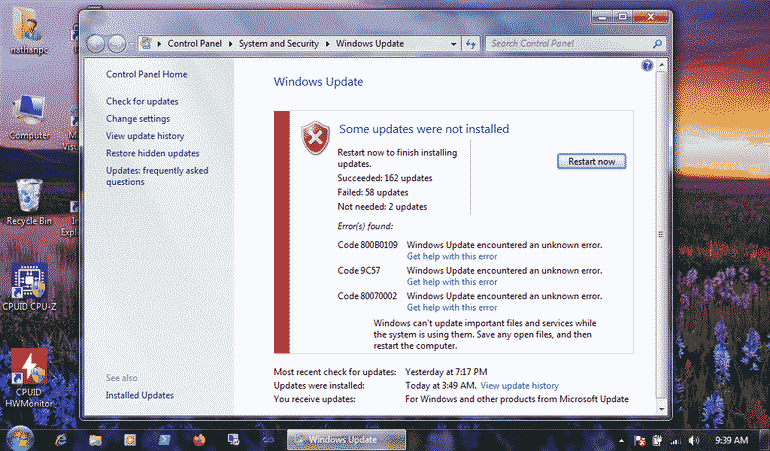

Old Computer Challenge 2024 - Day 5
Today was marked by a lot of progress in the Gopher client. I was able to get it to a point where it can easily parse entire directories knowing each item's data type. It's now at a point where all that's left to do is implement a browsing stack, enabling users to go back and forth in history, something that's relatively easy to implement (it's a simple stack, not a tree). After the stack gets implemented I'll be ready to move to the UI implementation phase, which will probably take place first on Windows, since I'm a lot more confortable with the Win32 API. Since the Eee PC is finally ready to go it'll probably be my main development machine for the first implementation of the client.


Speaking of the Eee PC, it spent the whole day getting Office 2010, Visual Visual Studio 2010, and 216 Windows updates installed. Getting from a fresh install of Windows 7 to a fully updated one is an ordeal these days, specially since many of them fail, due to dependencies on previous updates, making the whole process even more tedious and cumbersome, leaving me feeling as an admin recovering from the CrowdStrike fiasco.


Today was also the day when many of the participants in the challenge finished their journey, many of them will stick around IRC and due to the creation of the phpBB forums I do believe the community may stick together for longer. For me I'll still continue until Monday, but to be honest, after this amazing experience, I'll probably continue indefinitely, only breaking out modern machines when needed, let's see if I can in fact keep this up.
FIY: This post was written inside Notepad++ on the Eee PC.